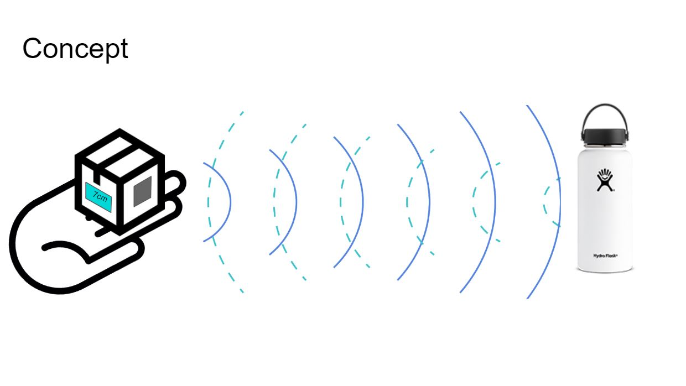
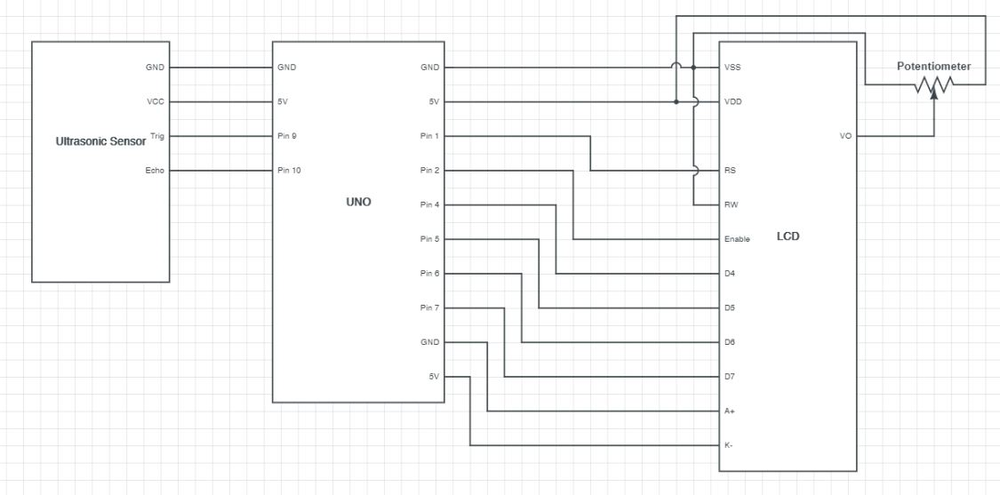

BACK
Final Project

This is the concept work for my project. The ultrasonic sensor detects the distance between the device and the object. The LCD screen displays that distance.

This is the schematic for the circuit. As previously mentioned, there is a ultrasonic sensor and LCD display, but there is also a potentiometer to adjust the brightness of the LCD display.
.jpg)
This is my circuit. The entire circuit is enclosed in a prototype cardboard box for ease of mobility. The entire circuit is also power by a 9V battery for mobility.
Firmware
//declaring library
#include
//creating LCD object
LiquidCrystal lcd(1, 2, 4, 5, 6, 7);
//defining trigPin variable
const int trigPin = 9;
//defining echoPin variable
const int echoPin = 10;
//defining duration variable for ultrasonic sensor
long duration;
// defining distanceCm variable
int distanceCm;
//setup function
void setup() {
//dimension setup for LCD screen
lcd.begin(16,2);
//setup for trigPin
pinMode(trigPin, OUTPUT);
//setup for echoPin
pinMode(echoPin, INPUT);
}
//loop function
void loop() {
//write LOW to trigPin
digitalWrite(trigPin, LOW);
//delay
delayMicroseconds(2);
//write HIGH to trigPin
digitalWrite(trigPin, HIGH);
//delay
delayMicroseconds(10);
//write LOW to trigPin
digitalWrite(trigPin, LOW);
//measurement between trigPin HIGH and echoPin HIGH
duration = pulseIn(echoPin, HIGH);
//distanceCm calculation
distanceCm= duration*0.034/2;
//writing to LCD starting point
lcd.setCursor(0,0);
//writing to LCD
lcd.print("Distance: ");
//writing distance to LCD
lcd.print(distanceCm);
//writing to LCD
lcd.print(" cm ");
//delay
delay(10);
}
This is the code for my project.
Code inspired from: https://howtomechatronics.com/tutorials/arduino/ultrasonic-sensor-hc-sr04/ & https://howtomechatronics.com/tutorials/arduino/lcd-tutorial/

This is a demo of my project.
Technical Write up
The concept of this project was to build a device for the main use case of determining the exact distance between two objects. To bring this concept to life I used an UNO board, an ultrasonic sensor, a potentiometer, and an LCD display.
Assisted by the firmware transferred onto the UNO board the ultrasonic sensor measures the distance the between itself and an object in its line of sight. The UNO board translates this data onto the LCD display. The brightness of the LCD display is controlled by the potentiometer.
This complete circuit is power by a 9V battery and is stored in a cardboard box for easy mobility.